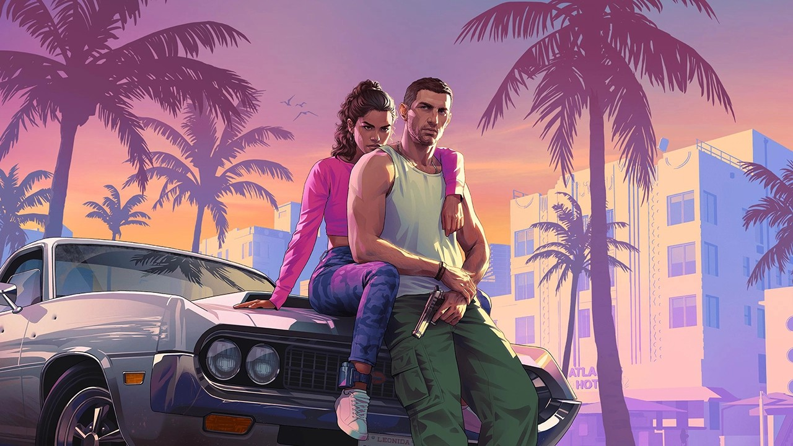
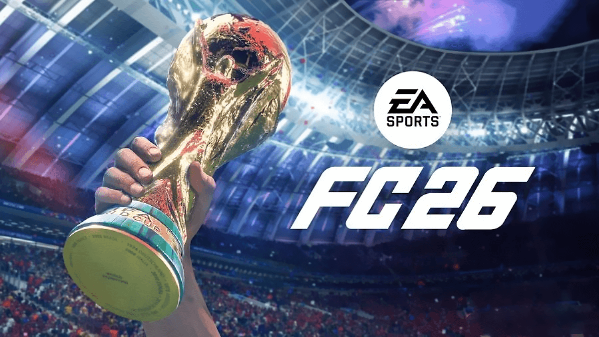

GTA 6 İçin Yeni Detaylar
Rockstar Games tarafından geliştirilen GTA 6, oyun dünyasının en çok beklenen yapımlarından biri. Yeni fragman ile birlikte harita ve karakterler hakkında yeni bilgiler paylaşıldı.
Oyun Haberleri ve İncelemeleri

Rockstar Games tarafından geliştirilen GTA 6, oyun dünyasının en çok beklenen yapımlarından biri. Yeni fragman ile birlikte harita ve karakterler hakkında yeni bilgiler paylaşıldı.

Minecraft, oyunculara sunduğu özgür dünya sayesinde yıllardır popülerliğini koruyor. Oyuncular kendi yapılarını oluşturabiliyor ve arkadaşlarıyla oynayabiliyor.

Valorant son yılların en popüler FPS oyunlarından biri. E-spor turnuvaları ve sürekli güncellenen içerikleri ile oyuncuların ilgisini çekmeye devam ediyor.

EA Sports'un sevilen futbol serisinin en yeni üyesi FC 26, geliştirilmiş oynanış mekanikleri ve yenilenen grafik motoruyla oyuncularla buluşuyor. Özellikle taktiksel derinlik, kariyer modundaki köklü değişiklikler ve Ultimate Team güncellemeleriyle bu yıl da futbolseverlere çok daha gerçekçi bir saha deneyimi sunuyor.